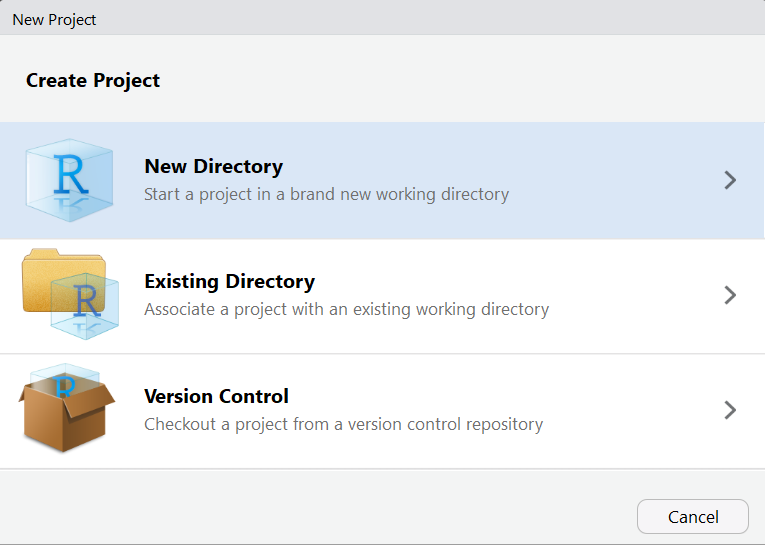
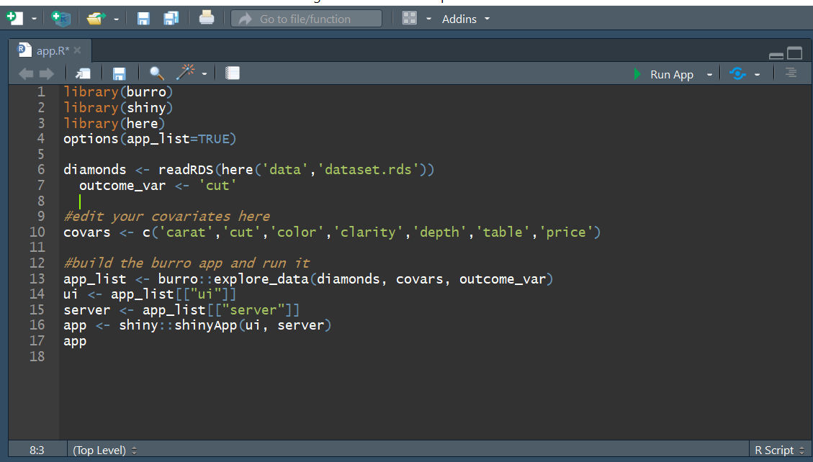

Making and Deploying a burro app
Ted Laderas
January 9, 2019
Source:vignettes/making_a_burro_app.Rmd
making_a_burro_app.RmdNote
There is currently an issue with visdat and the Shiny app when deployed. The app is not showing the `visdat summary when given a very large dataset. This apparently has to with the memory available on the Shiny server. For this reason, try to subset the data in the app to be around 10,000 rows or less, unless you have more memory.
Let’s make an app!
Excited to make an app to explore data together? You’ve come to the right place.
burro has a function called build_shiny_app that will do most of the building for you. Let’s run through that process. Here’s the steps required to build an app.
Steps in Making a burro App
- Make a new project
- Load your Data (and data dictionary in)
- Choose your Covariates
- Choose your outcome variable
- Build App
- Deploy to
shinyapps.io.
1. Make a New Project
In RStudio, make a new project by going to File >> New Project and Choose the “New Folder” option.


## Loading required package: shinyName the folder what you want your app to be named. Let’s name our project “diamonds”.

2. Load in Your Data (and data dictionary)
We’re going to use the diamonds dataset from the ggplot2 package. In the console, type the following:
## # A tibble: 6 x 10
## carat cut color clarity depth table price x y z
## <dbl> <ord> <ord> <ord> <dbl> <dbl> <int> <dbl> <dbl> <dbl>
## 1 0.23 Ideal E SI2 61.5 55 326 3.95 3.98 2.43
## 2 0.21 Premium E SI1 59.8 61 326 3.89 3.84 2.31
## 3 0.23 Good E VS1 56.9 65 327 4.05 4.07 2.31
## 4 0.290 Premium I VS2 62.4 58 334 4.2 4.23 2.63
## 5 0.31 Good J SI2 63.3 58 335 4.34 4.35 2.75
## 6 0.24 Very Good J VVS2 62.8 57 336 3.94 3.96 2.483. Choose your variables
Your dataset may have variables (or covariates) that you might want to remove from the app. Here’s your chance to whittle them down, by selecting the covariates that you want to include.
Here are all of the variables in the diamonds dataset.
## [1] "carat" "cut" "color" "clarity" "depth" "table" "price"
## [8] "x" "y" "z"We’re going to specify our variables as
4. Choose your outcome variable
You’ll now need to choose your outcome variable, which currently needs to be a factor (categorical) variable. A number of visualizations in burro are in terms of this outcome.
We’re going to focus on the cut type of the diamond as our outcome.
5. Build your app!
With everything specified, we can now build our app in our current project. diamonds is a fairly large dataset (over 50,000 rows) and we need to filter it down with the dplyr command sample_n, to limit it to 10,000 rows. This ensures that the burro app will run on limited memory servers such as the ones available to default shinyapps.io accounts.
diamonds <- diamonds %>% dplyr::sample_n(10000)
build_shiny_app(dataset = diamonds, covariates=covars, outcome_var=outcome)Check to make sure that there’s an app.R in your main project folder and there is a dataset.rds file in your data folder inside your project.
Open the app.R file and hit the Run App button. Your app should pop up. Try it out!

6. Deploy to shinyapps.io
Your burro project is now ready to be deployed to a Shiny Server! We’ll focus on Shinyapps.io because it’s free. You’ll need to follow the directions here: https://docs.rstudio.com/shinyapps.io/getting-started.html (signing up, installing the rsconnect package, setting it up) to get started.
Once all that is setup, you can hit the “Publish” button or use rsconnect::deployApp() to publish it to your Shinyapps.io account.
7. Send your URL out and have a data scavenger hunt!
Your burro app is now ready to share at your url. Send it out and have a data scavenger hunt!